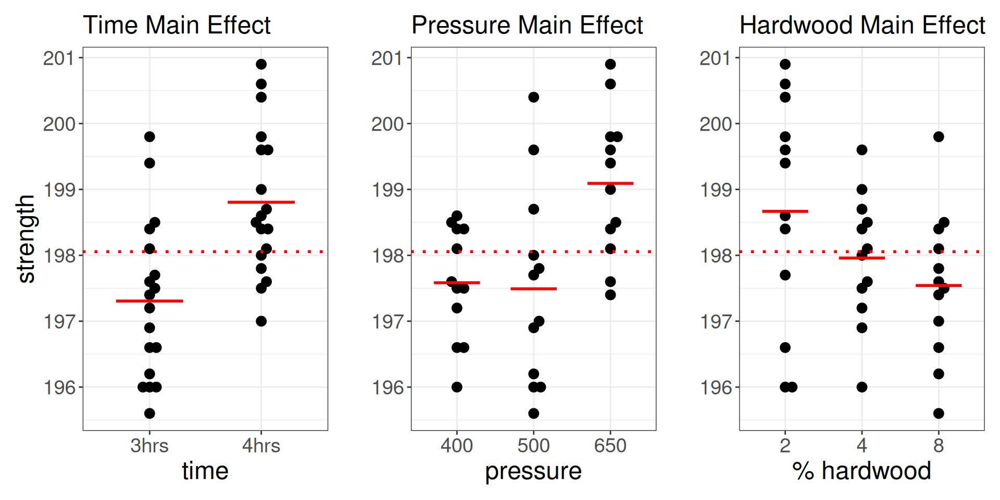
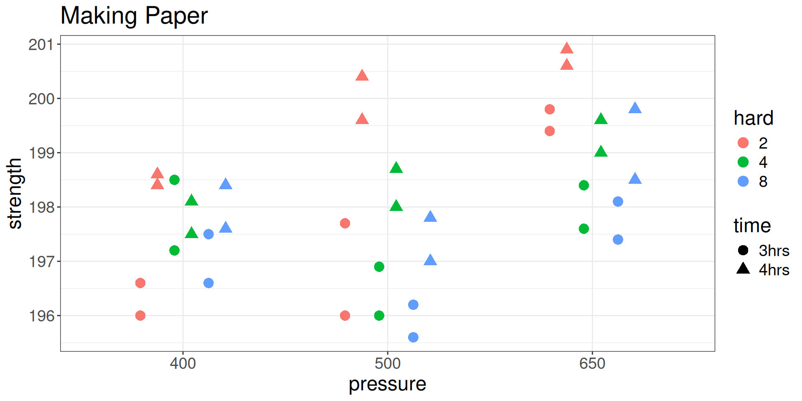
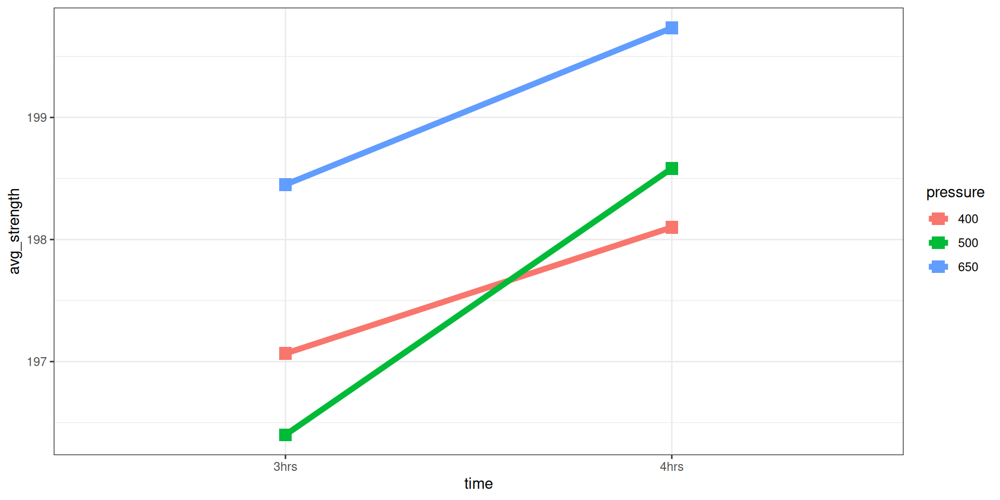
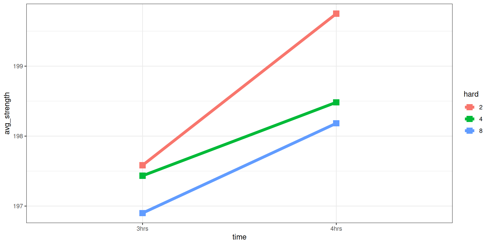
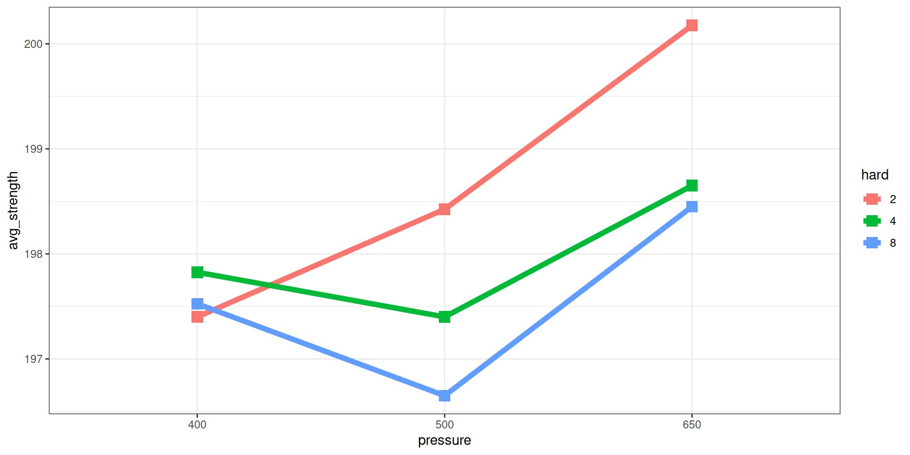
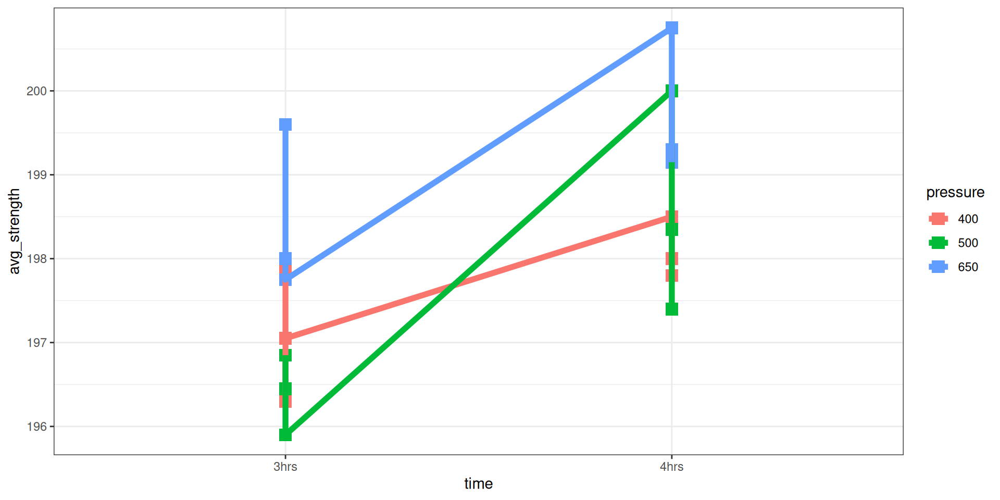
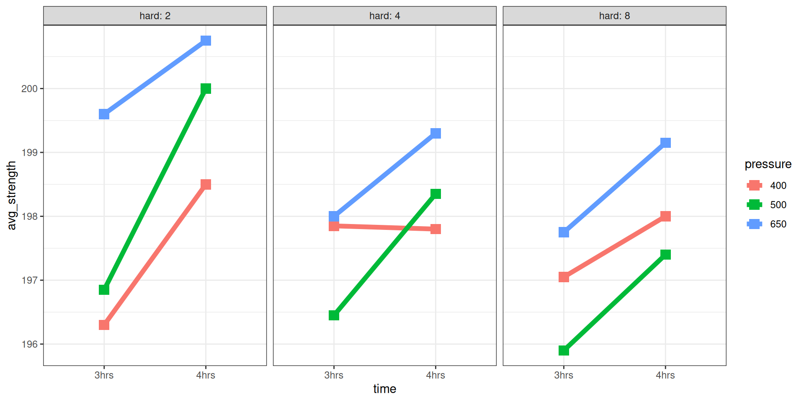

| Factor | Levels |
|---|---|
| Cooking time of pulp | 3, 4 hours |
| Vat pressure | 400, 500, 650 psi |
| % Hardwood in pulp | 2, 4, 8% |
Main Effects Plot

Conceptually there is nothing that limits us to CR[1] and CR[2]. Can do CR[3], CR[4], …
Researchers tinker with the recipe for making paper to assess the effect on its strength.
| Factor | Levels |
|---|---|
| Cooking time of pulp | 3, 4 hours |
| Vat pressure | 400, 500, 650 psi |
| % Hardwood in pulp | 2, 4, 8% |
# treatments
2 = 18
| strength | hard | time | pressure |
|---|---|---|---|
| 196.6 | 2 | 3hrs | 400 |
| 196.0 | 2 | 3hrs | 400 |
| 198.5 | 4 | 3hrs | 400 |
| 197.2 | 4 | 3hrs | 400 |
| 197.5 | 8 | 3hrs | 400 |
| 196.6 | 8 | 3hrs | 400 |
| 197.7 | 2 | 3hrs | 500 |
| 196.0 | 2 | 3hrs | 500 |
| 196.0 | 4 | 3hrs | 500 |
| 196.9 | 4 | 3hrs | 500 |
| 195.6 | 8 | 3hrs | 500 |
| 196.2 | 8 | 3hrs | 500 |
| 199.8 | 2 | 3hrs | 650 |
| 199.4 | 2 | 3hrs | 650 |
| 198.4 | 4 | 3hrs | 650 |
| 197.6 | 4 | 3hrs | 650 |
| 197.4 | 8 | 3hrs | 650 |
| 198.1 | 8 | 3hrs | 650 |
| 198.4 | 2 | 4hrs | 400 |
| 198.6 | 2 | 4hrs | 400 |
| 197.5 | 4 | 4hrs | 400 |
| 198.1 | 4 | 4hrs | 400 |
| 197.6 | 8 | 4hrs | 400 |
| 198.4 | 8 | 4hrs | 400 |
| 199.6 | 2 | 4hrs | 500 |
| 200.4 | 2 | 4hrs | 500 |
| 198.7 | 4 | 4hrs | 500 |
| 198.0 | 4 | 4hrs | 500 |
| 197.0 | 8 | 4hrs | 500 |
| 197.8 | 8 | 4hrs | 500 |
| 200.6 | 2 | 4hrs | 650 |
| 200.9 | 2 | 4hrs | 650 |
| 199.6 | 4 | 4hrs | 650 |
| 199.0 | 4 | 4hrs | 650 |
| 198.5 | 8 | 4hrs | 650 |
| 199.8 | 8 | 4hrs | 650 |


You’ll need at least one interaction plot for each pairwise combination of factors (1 for CR[2], 3 for CR[3]).
Parallel lines indicate no interaction.
strength hard time pressure
1 196.6 2 3hrs 400
2 196.0 2 3hrs 400
3 198.5 4 3hrs 400
4 197.2 4 3hrs 400
5 197.5 8 3hrs 400
6 196.6 8 3hrs 400
7 197.7 2 3hrs 500
8 196.0 2 3hrs 500
9 196.0 4 3hrs 500
10 196.9 4 3hrs 500
11 195.6 8 3hrs 500
12 196.2 8 3hrs 500
13 199.8 2 3hrs 650
14 199.4 2 3hrs 650
15 198.4 4 3hrs 650
16 197.6 4 3hrs 650
17 197.4 8 3hrs 650
18 198.1 8 3hrs 650
19 198.4 2 4hrs 400
20 198.6 2 4hrs 400
21 197.5 4 4hrs 400
22 198.1 4 4hrs 400
23 197.6 8 4hrs 400
24 198.4 8 4hrs 400
25 199.6 2 4hrs 500
26 200.4 2 4hrs 500
27 198.7 4 4hrs 500
28 198.0 4 4hrs 500
29 197.0 8 4hrs 500
30 197.8 8 4hrs 500
31 200.6 2 4hrs 650
32 200.9 2 4hrs 650
33 199.6 4 4hrs 650
34 199.0 4 4hrs 650
35 198.5 8 4hrs 650
36 199.8 8 4hrs 650# A tibble: 6 × 4
# Groups: time [2]
time pressure avg_strength n
<fct> <fct> <dbl> <int>
1 3hrs 400 197. 6
2 3hrs 500 196. 6
3 3hrs 650 198. 6
4 4hrs 400 198. 6
5 4hrs 500 199. 6
6 4hrs 650 200. 6
# A tibble: 6 × 3
# Groups: time [2]
time hard avg_strength
<fct> <fct> <dbl>
1 3hrs 2 198.
2 3hrs 4 197.
3 3hrs 8 197.
4 4hrs 2 200.
5 4hrs 4 198.
6 4hrs 8 198.
# A tibble: 9 × 3
# Groups: pressure [3]
pressure hard avg_strength
<fct> <fct> <dbl>
1 400 2 197.
2 400 4 198.
3 400 8 198.
4 500 2 198.
5 500 4 197.
6 500 8 197.
7 650 2 200.
8 650 4 199.
9 650 8 198.
You’ll need at least one interaction plot for each pairwise combination level of one of the three factors.
You’ll need at least one interaction plot for each pairwise combination level of one of the three factors.
# A tibble: 18 × 5
# Groups: time, pressure [6]
time pressure hard avg_strength n
<fct> <fct> <fct> <dbl> <int>
1 3hrs 400 2 196. 2
2 3hrs 400 4 198. 2
3 3hrs 400 8 197. 2
4 3hrs 500 2 197. 2
5 3hrs 500 4 196. 2
6 3hrs 500 8 196. 2
7 3hrs 650 2 200. 2
8 3hrs 650 4 198 2
9 3hrs 650 8 198. 2
10 4hrs 400 2 198. 2
11 4hrs 400 4 198. 2
12 4hrs 400 8 198 2
13 4hrs 500 2 200 2
14 4hrs 500 4 198. 2
15 4hrs 500 8 197. 2
16 4hrs 650 2 201. 2
17 4hrs 650 4 199. 2
18 4hrs 650 8 199. 2

For comparison…
A shortcut: use lm().
Call:
lm(formula = strength ~ time * pressure * hard, data = paper)
Residuals:
Min 1Q Median 3Q Max
-0.8500 -0.3625 0.0000 0.3625 0.8500
Coefficients:
Estimate Std. Error t value Pr(>|t|)
(Intercept) 198.055556 0.100769 1965.448 < 2e-16 ***
time1 -0.750000 0.100769 -7.443 6.75e-07 ***
pressure1 -0.472222 0.142508 -3.314 0.003863 **
pressure2 -0.563889 0.142508 -3.957 0.000924 ***
hard1 0.611111 0.142508 4.288 0.000442 ***
hard2 -0.097222 0.142508 -0.682 0.503785
time1:pressure1 0.233333 0.142508 1.637 0.118924
time1:pressure2 -0.341667 0.142508 -2.398 0.027567 *
time1:hard1 -0.333333 0.142508 -2.339 0.031066 *
time1:hard2 0.225000 0.142508 1.579 0.131782
pressure1:hard1 -0.794444 0.201537 -3.942 0.000956 ***
pressure2:hard1 0.322222 0.201537 1.599 0.127266
pressure1:hard2 0.338889 0.201537 1.682 0.109930
pressure2:hard2 0.005556 0.201537 0.028 0.978312
time1:pressure1:hard1 -0.250000 0.201537 -1.240 0.230730
time1:pressure2:hard1 -0.150000 0.201537 -0.744 0.466314
time1:pressure1:hard2 0.316667 0.201537 1.571 0.133535
time1:pressure2:hard2 -0.083333 0.201537 -0.413 0.684133
---
Signif. codes: 0 '***' 0.001 '**' 0.01 '*' 0.05 '.' 0.1 ' ' 1
Residual standard error: 0.6046 on 18 degrees of freedom
Multiple R-squared: 0.9008, Adjusted R-squared: 0.807
F-statistic: 9.611 on 17 and 18 DF, p-value: 7.797e-06 Df Sum Sq Mean Sq F value Pr(>F)
time 1 20.250 20.250 55.395 6.75e-07 ***
pressure 2 19.374 9.687 26.499 4.33e-06 ***
hard 2 7.764 3.882 10.619 0.0009 ***
time:pressure 2 2.195 1.097 3.002 0.0750 .
time:hard 2 2.082 1.041 2.847 0.0843 .
pressure:hard 4 6.091 1.523 4.166 0.0146 *
time:pressure:hard 4 1.973 0.493 1.350 0.2903
Residuals 18 6.580 0.366
---
Signif. codes: 0 '***' 0.001 '**' 0.01 '*' 0.05 '.' 0.1 ' ' 1[1] 55.395137 26.499240 10.619301 3.002280 2.847264 4.165653 1.349544
[8] NARecall for 2 factor w interactions: